Stubaier Hoehenweg
“3 days in 1 day”
Sometimes circumstances conspire to send you out into the hills despite the rain. The Alps are in the midst of a long low-pressure spell, bedeviled by clouds, rain, and even snow on hiking trails. I needed some exercise, and naturally hoped to glimpse some mysterious mountains between the clouds. I left Munich in light rain, making for the Stubai Alps south of Innsbruck.
I made a little video, no big dealie
</embed>
My hiking guidebook mentioned a 5-6 day tour around the Stubai valley in the central part of the range. I thought I could manage to hike several “legs” of this tour in a long day trip. Since trails weave up and down every valley, I just took a map and thought I’d see where my wanderings take me. I carried an umbrella, and a surfeit of warm clothing wrapped tightly in a plastic bag. I made the mistake of leaving my cell phone in the car, which ended up bringing worry to my wife and neighbors as well (doh!!).
But for now, I parked in Neustift and soon was hiking up a steep trail towards the Starkenburger Hut, said to be 3 hours distant. Despite steady rain, views were quite good…of a dozen avalanche control fences radiating from the summit of Hoher Burgstall (doh!). It must be to protect against violent spring avalanches that would rip down the slick, steep grass slopes. At the hut I went in long enough to gauge where I could go on the map, and ask the time. It had taken me 2 hours to here, so I thought my hastily imagined plan to go to the head of the Oberberg Valley and back a different way would work.
Above the hut I saw sheep and gaemse. The trail was especially pretty as it contoured above the Seealm. Then, at the Seejoch I had misty views of the Riepenwand and Grosse Ochsenwand, on which I’d hiked the previous fall. Another party was here, and we were amused at the foot of fresh snow on the 2500 meter pass. Wind had even created a mini “demonstration cornice”. Views up the Oberbergtal made me aware how far of a walk I had ahead of me!
For a while, the trail stayed on the ridgecrest, probably really spectacular in good weather. Later, from immense hillsides of grass I saw dizzying views down to the Oberbergtal. Sometimes it rained, sometimes it didn’t. I walked for hours.
Eventually I came to a junction that would allow you to turn north and hike over a divide to the town of Luesens. It was tempting to imagine doing that, holing up somewhere warm for the night, and continuing on a wandering way the next day. But I continued on to the Franz Senn Hut, where for a happy hour I warmed myself with Kaesespetzle (kind of like macaroni and cheese). I realized I was kind of tired and sore already, but I didn’t want to bail down to the flat Oberberg valley and hitch a ride to Neustift just yet. I thought I was more than halfway done with the loop, and it was only 2 pm. Also, the rain stopped (yay!).
From the hut, I now headed back the direction I came, only on the other side of the valley. I couldn’t keep from thinking about the scale of these mountains. I was learning to not be surprised at my “slow” progress relative to where I thought I should be by looking at a pass in the distance. I was excited to come back on a sunny day, but in the meantime, the mysterious intermingling of clouds and peaks was entertaining. I had to keep moving to stay warm though, and happily the trail turned uphill to climb over a 2700 meter pass called the Schrimmennieder. First there was a beautiful little tarn with a backdrop of snowy peaks to the north. I had deep snow at the pass, but at least it was all downhill from here.
Steeply down in thick fog, then I could see I had entered a broad basin. Rather than following a trail right to the Neue Regensberger Hut, I went left to gain a long trail that gradually descended to Milders. This trail kind of woke me up though, as it was a tiny path through steep, slick grass above some cliffs from time to time. For long periods I was reminded of the “Corkscrew Route” on Sloan Peak back in good ol’ Washington State. Eventually I descended into the broad Kerrachgrube, startling a herd of gaemse who seperated above and below me as I galumphed along. After a while, the trail betrayed me, climbing up several hundred feet in very steep forest patches.
In fact, I became convinced that I’d walked all the way around this mountain and was now heading back into the Oberberg valley! A look behind me seemed to confirm my fears. I’d passed a lone sign at a place called Ring, and now I thought that had been the junction to go down to Milders. Woe is me, I thought! The effort needed to get back up there!
When this happens, it’s good to have a compass. So I got the compass out, oriented the map, and breathed a great sigh of relief. My sense of direction had gotten 180 degrees off in the fog and clouds. Pleased, but somewhat dismayed at the long distance I still had to go, I kept on heading east, and finally somewhat down again. I didn’t know the time, but the sky was darker than it had been.
Before I reached the hut at Milderaunalm, I saw the fertile valley with Neustift far, far away and 700 meters below. I couldn’t believe I proposed to get there tonight! Limping somewhat, I stomped down the road beside the abandoned hut. I made a game of following increasingly faint trails through woods and clearcuts to get off the boring road. Eventually I was lowering myself down ladders of roots and rotten limbs in the dusk. After that I stuck to the road!
A long walk down to Milders and a pay phone. I could call my wife who had really worried because she expecting me just to go for a morning hike. Plus our neighbors had just heard about somebody slipping and falling (to death) on these steep, wet, grassy trails. I so should have taken the cell phone!
Anyway, sorry the views weren’t that great. But it was good exercise (something like 40 kilometers and well over 2000 meters elevation gain/loss), and I’m psyched to do more hiking here. The final walk to Neustift was so slow; I was a wet, limping puppy back at the car that I’d left 15 hours before.
|
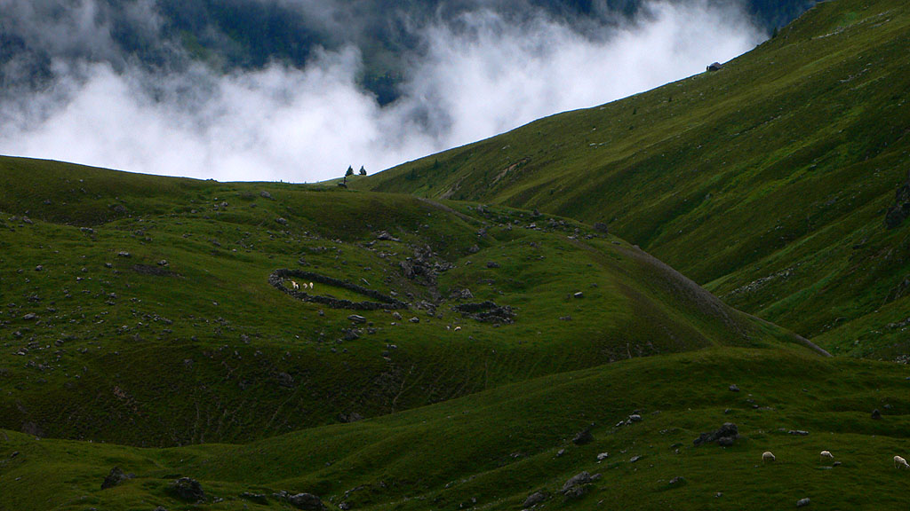 Sheep on the Seealm |
|
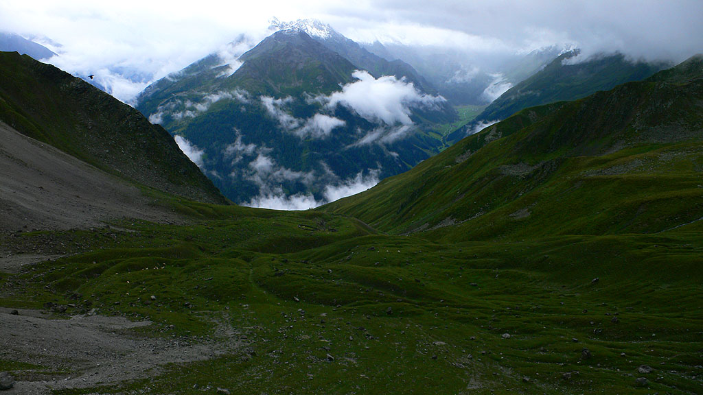 The Seealm with the Oberberg valley behind |
|
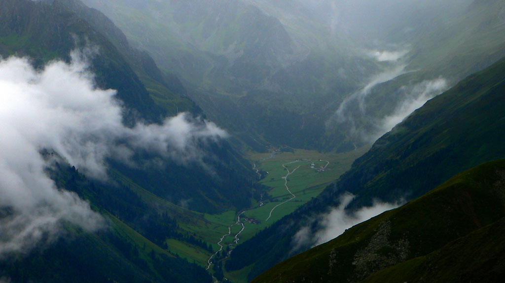 A closeup of the misty Oberberg valley |
|
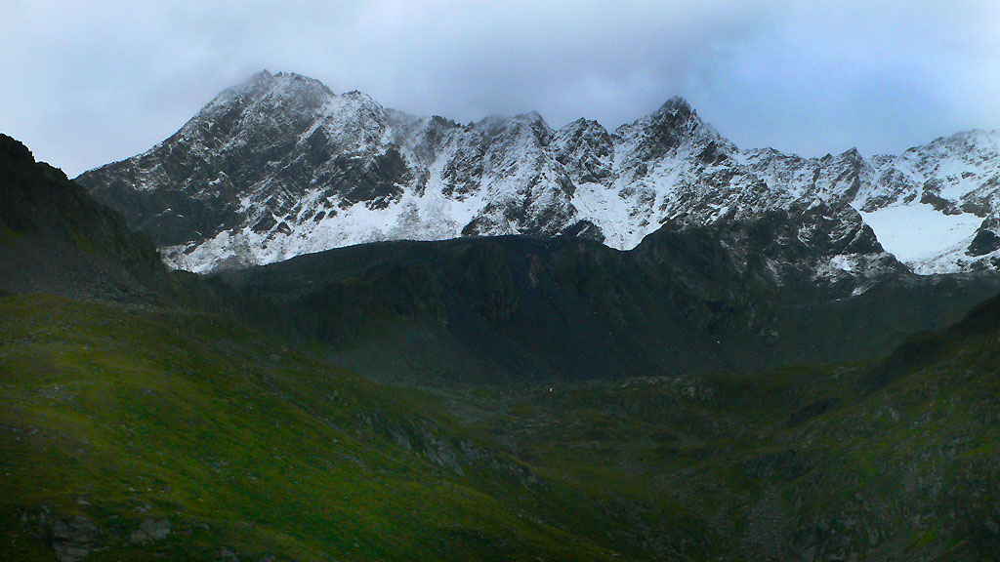 Fresh snow on the Falbesoner |
|
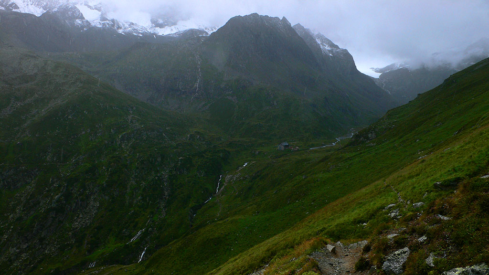 The Franz Senn Hut is dwarfed by mountains |
|
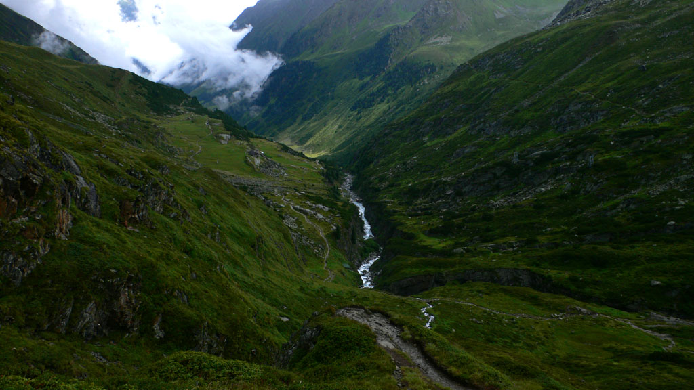 Looking down the Oberbergtal |
|
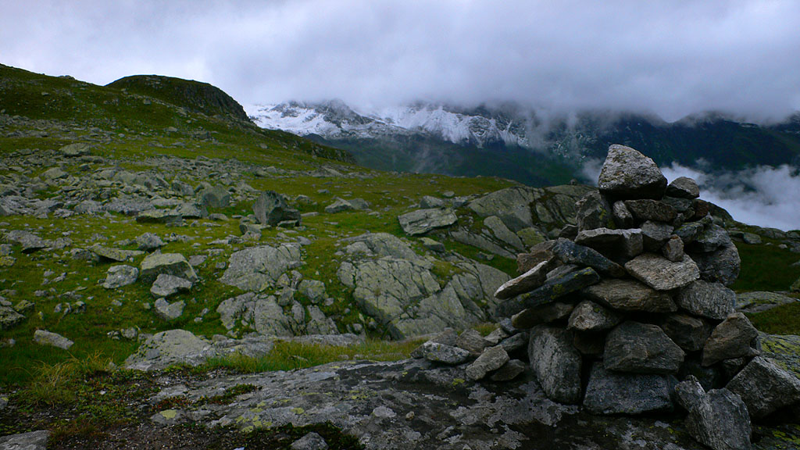 Wild highlands |
|
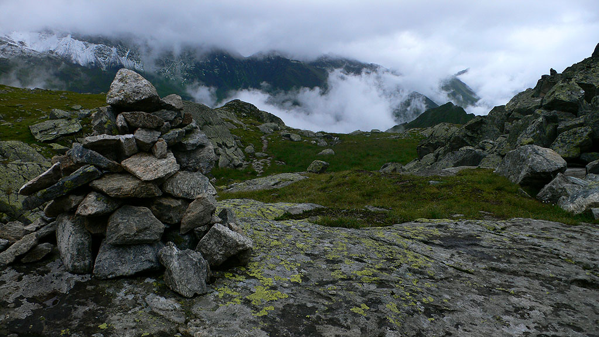 All alone in the mist |
|
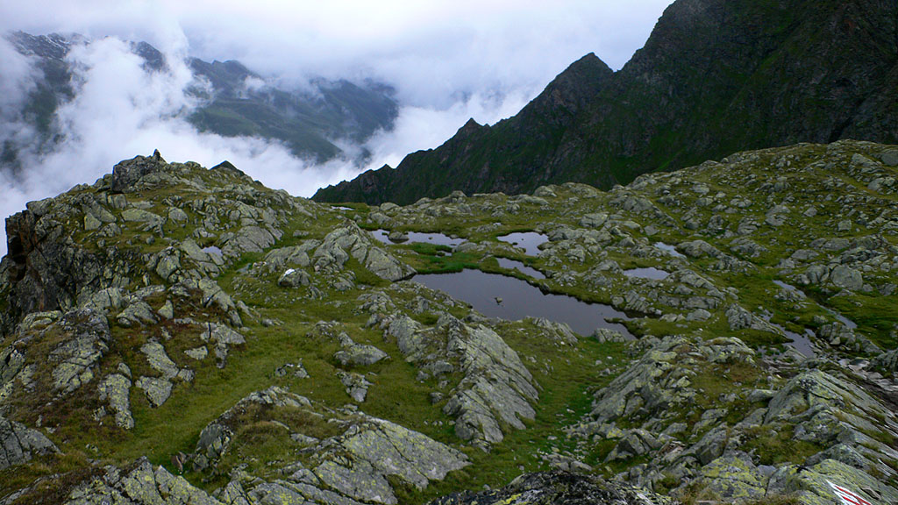 A pretty tarn |
|
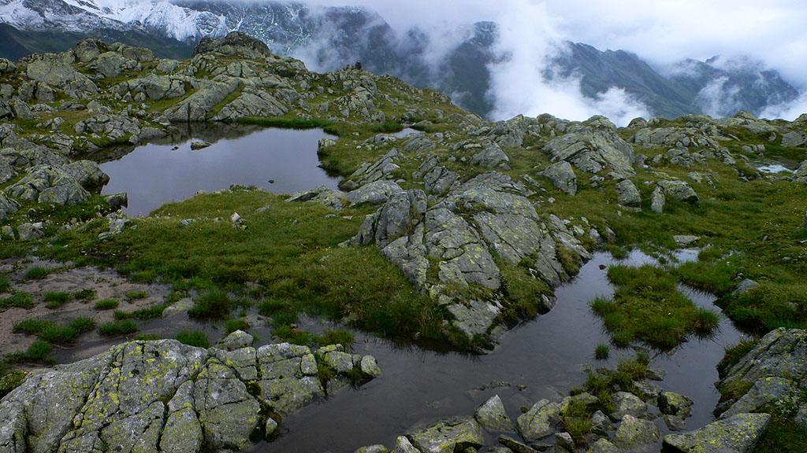 More of the tarns |
|
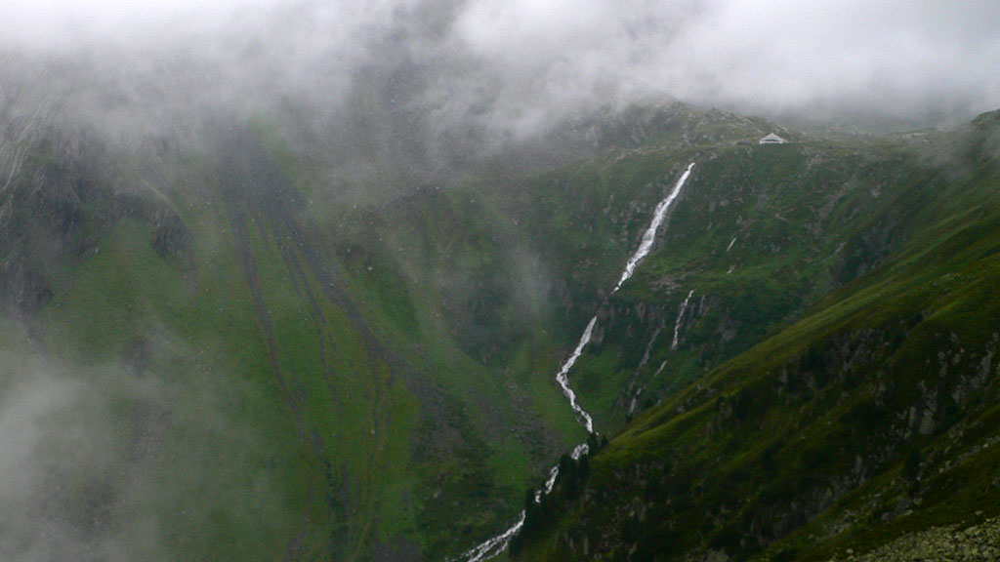 Roaring river by the Neue Regensberger Hut |
{kind=link}
{kind=link}
{kind=link}
{kind=link}
{kind=link}
{kind=link}
{kind=link}
{kind=link}
{kind=link}
{kind=link}
{kind=link}